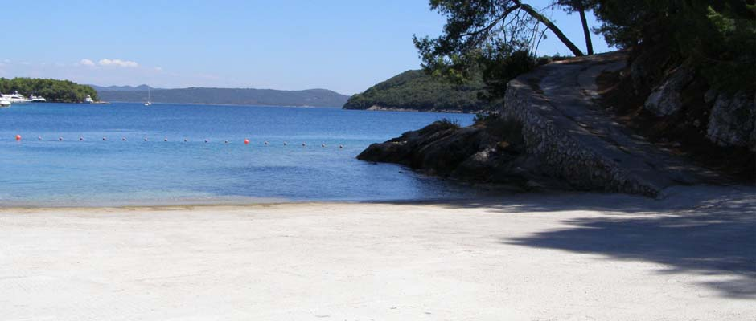
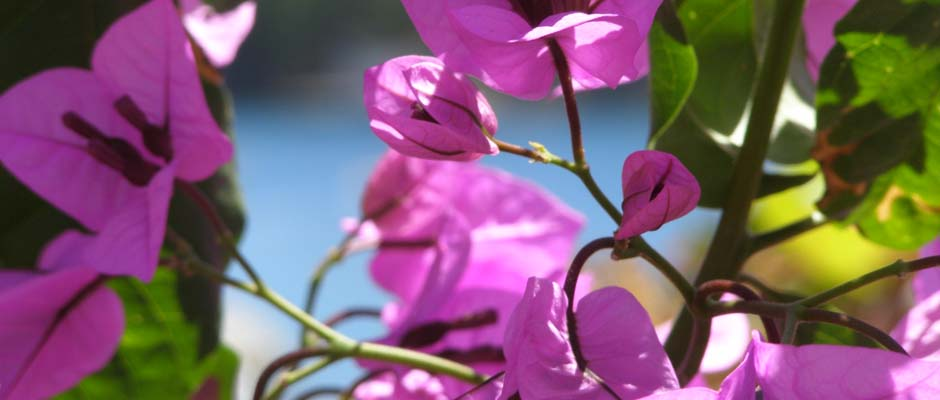

Oaza mira
Otoci su od davnina poznati kao oaze mira koje putnicima pružaju doživljaj posvemašnjeg opuštanja te duhovnog i tjelesnog odmora.

Čisto more
Jedno od najljepših prirodnih bogatstava Dugog otoka zasigurno su njegove plaže i uvale. Kristalno čisto more mami svojom ljepotom, a raskoš podvodnog života izaziva divljenje.

Netaknuta priroda
Netaknuta priroda, bogata flora i fauna, Nacionalni park Kornati te Park prirode Telašćica jedinstveni su za Dugi otok.